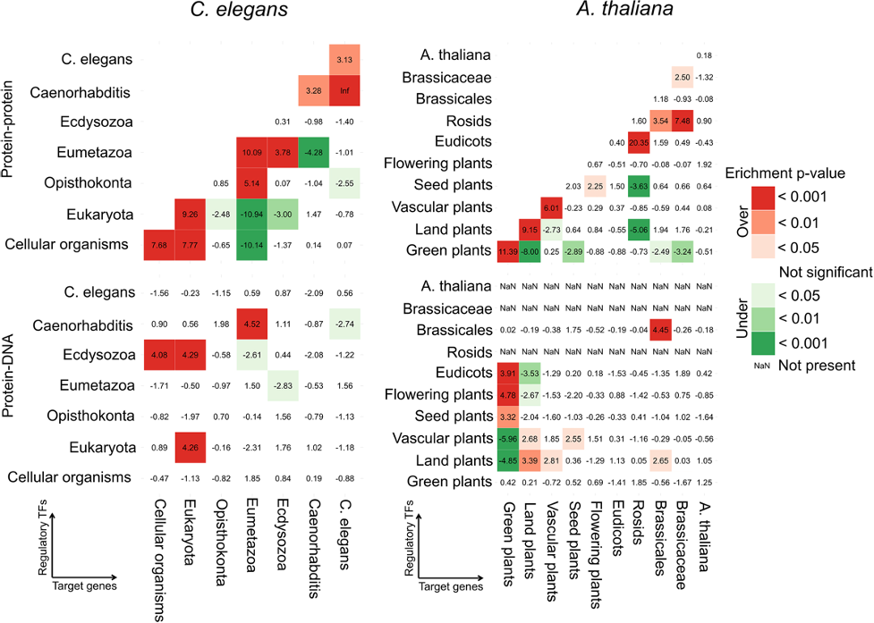

When I was reading a network analysis paper titled Function, dynamics and evolution of network motif modules in integrated gene regulatory networks of worm and plant, I ran into this plot:

Figure 8 from the above paper
If we focus on one panel of the above figure, it shows a enrichment result, number in each cell is Z-score and each cell is colored by the significance level, with green meaning under-represented and red over-represented.
I wonder if I could make similar plots with some pseudo data in R.
Here we go~
First, let’s generate some pseudo data.
runif function to generate 100 numbers from uniform distribution within range [-5,5] as Z-scores.pnorm to calcualte the probabilites for each z-score following a Normal distribution N(0,1).library(ggplot2)
library(gridExtra)
options(stringsAsFactors = F)
## prepare z-score and pvalue matrix
set.seed(123)
dat=runif(100,min=-5,max=5)
dat.p=pnorm(dat)
plot(dat,dat.p,xlab='Z-score',ylab='cumulative probability');
mat.zscore=matrix(dat,ncol=10)
mat.pvalue=matrix(dat.p,ncol=10)
rownames(mat.zscore)=colnames(mat.zscore)=paste('node',1:10)
rownames(mat.pvalue)=colnames(mat.pvalue)=paste('node',1:10)As I’m gonna use ggplot to draw heatmaps, ggplot handles data frame. I change matrix into data.frame and make a ‘naive’ plot.
df.zscore=reshape2::melt(mat.zscore)
df.pvalue=reshape2::melt(mat.pvalue)
p1<-ggplot(df.zscore,aes(x=Var1,y=Var2,fill=value))+
geom_tile()+geom_text(label=round(df.zscore$value,3))+theme_bw()+ggtitle('zscore')
p2<-ggplot(df.pvalue,aes(x=Var1,y=Var2,fill=value))+
geom_tile()+geom_text(label=round(df.zscore$value,3))+theme_bw()+ggtitle('pvalue')
grid.arrange(p1,p2,ncol=2)
As you can see above, the default color scheme in ggplot is pretty boring. Next, I combine the two data frames.
When combining data, it’s important to take care of their orders, like, should row 1 in dataset 1 be combined with row 6 or row 9 in dataset 2?
To add a little twist, I intentionally shuffle the 2nd dataset, and then re-order it based on row information in dataset 1 before combining.
## combine the two data.frame, jsut for demonstration, I shuffled df.pvalue
df.zscore$edge=paste(df.zscore$Var1,df.zscore$Var2)
df.pvalue$edge=paste(df.pvalue$Var1,df.pvalue$Var2)
df=df.zscore;
df.pvalue=df.pvalue[sample(1:nrow(df.pvalue),nrow(df.pvalue),replace = F),]
i=match(df.zscore$edge,df.pvalue$edge)
## make sure row order matches
sum(df.pvalue[i,]$edge==df.zscore$edge)## [1] 100df.pvalue=df.pvalue[i,]
df$pvalue=df.pvalue$valueThe goal is to show Z-score as text inside each cell, and color each cell based on p.value significance value.
Thus, we need to decide what is significant and how many significant levels we’d like to show.
I random select some cells and change them into NA. Then select three significant levels for both over-representation and under-represntation.
With cut function in R, it’s easy to map continuous pvalues into exclusive, discrete significant level groups.
Each p.value corresponds to one and only one significant group, and this significant group information is added as one new column to the orginical data frame.
Then I select some discrete colors for each significant group and use ggplot scale_fill_manual() function to customize aesthetic colors.
set.seed(123)
i=sample(1:nrow(df),10,replace = F)
df[i,]$value=NA;df[i,]$pvalue=NA;
# sig.level: right tail area, over-represented: 0.95,0.99,0.999
# sig.level: left tail area, under-represented: 0.95,0.99,0.999
sig.cutoff=c(0.95,0.99,0.999)
sig.cutoff=sort(unique(c(1-sig.cutoff,sig.cutoff)))
if(min(sig.cutoff!=0)){sig.cutoff=c(-10,sig.cutoff)} #you will see why in the below cut behavior
if(max(sig.cutoff!=1)){sig.cutoff=c(sig.cutoff,10)}
sig.cutoff## [1] -10.000 0.001 0.010 0.050 0.950 0.990 0.999 10.000# default cut behavior: (,]
# you can use include.lowest to force [,]
# or use right = F, to force (,)
df$pvalue.group=
cut(df$pvalue,breaks=sig.cutoff,right=T,include.lowest=T)
sum(table(df$pvalue.group))==sum(!is.na(df$pvalue)) #make sure, besides NA, no data.point is left out## [1] TRUEtable(df$pvalue.group)##
## [-10,0.001] (0.001,0.01] (0.01,0.05] (0.05,0.95] (0.95,0.99] (0.99,0.999]
## 18 8 6 28 7 8
## (0.999,10]
## 15## assign labels to these sig.levels
levels(df$pvalue.group)## [1] "[-10,0.001]" "(0.001,0.01]" "(0.01,0.05]" "(0.05,0.95]" "(0.95,0.99]"
## [6] "(0.99,0.999]" "(0.999,10]"my.direct=c(rep('under',3),'',rep('over',3));
my.sig=c('<0.001','<0.01','<0.05','Not sig','<0.05','<0.01','<0.001')
my.label=paste(my.direct,my.sig)
my.label## [1] "under <0.001" "under <0.01" "under <0.05" " Not sig" "over <0.05"
## [6] "over <0.01" "over <0.001"levels(df$pvalue.group)=my.label
ggplot(df,aes(x=Var1,y=Var2,fill=pvalue.group))+
geom_tile()+geom_text(label=round(df$value,3))+
theme_bw()
## select proper cell colors related to pvalues
library("RColorBrewer")
#display all colour schemes
display.brewer.all()
mycols=rev(brewer.pal(11,"RdYlGn"))
barplot(rep(1,length(mycols)),col=mycols)
mycol=c(mycols[c(1,3,5)],'grey90',mycols[c(7,9,11)])
barplot(rep(1,length(mycol)),col=mycol)
p1 = ggplot(df,aes(x=Var1,y=Var2,fill=pvalue.group))+
geom_tile()+geom_text(label=round(df$value,3))+
theme_bw()+
scale_fill_manual(name='Enrichment p-value',values = mycol)
my_theme=theme(
panel.grid.major = element_blank(),
panel.grid.minor = element_blank(),
panel.border = element_blank(),
panel.background = element_blank(),
axis.ticks = element_blank(),
axis.line = element_blank(),
axis.text.x=element_text(size=14,angle=45,hjust=1),
axis.text.y=element_text(size=14),
axis.title=element_text(size=14,face="bold"),
legend.title=element_text(size=14,face="bold"),
legend.text=element_text(size=14));
p1+my_theme
p2 = ggplot(df,aes(x=Var1,y=Var2,fill=pvalue.group))+
geom_tile()+geom_text(label=round(df$value,3))+
theme_bw()+
scale_fill_manual(name='Enrichment p-value',
labels = my.sig,
values = mycol)
p2+my_theme
Nicely done~
devtools::session_info()## ─ Session info ───────────────────────────────────────────────────────────────
## setting value
## version R version 4.1.3 (2022-03-10)
## os macOS Big Sur/Monterey 10.16
## system x86_64, darwin17.0
## ui X11
## language (EN)
## collate en_US.UTF-8
## ctype en_US.UTF-8
## tz America/Los_Angeles
## date 2023-05-26
## pandoc 2.18 @ /Applications/RStudio.app/Contents/MacOS/quarto/bin/tools/ (via rmarkdown)
##
## ─ Packages ───────────────────────────────────────────────────────────────────
## package * version date (UTC) lib source
## assertthat 0.2.1 2019-03-21 [1] CRAN (R 4.1.0)
## blogdown 1.17.2 2023-05-27 [1] Github (rstudio/blogdown@75e4855)
## bookdown 0.25 2022-03-16 [1] CRAN (R 4.1.2)
## brio 1.1.3 2021-11-30 [1] CRAN (R 4.1.0)
## bslib 0.3.1 2021-10-06 [1] CRAN (R 4.1.0)
## cachem 1.0.6 2021-08-19 [1] CRAN (R 4.1.0)
## callr 3.7.0 2021-04-20 [1] CRAN (R 4.1.0)
## cli 3.5.0 2022-12-20 [1] CRAN (R 4.1.2)
## colorspace 2.0-2 2021-06-24 [1] CRAN (R 4.1.0)
## crayon 1.5.0 2022-02-14 [1] CRAN (R 4.1.2)
## DBI 1.1.2 2021-12-20 [1] CRAN (R 4.1.0)
## desc 1.4.0 2021-09-28 [1] CRAN (R 4.1.0)
## devtools 2.4.3 2021-11-30 [1] CRAN (R 4.1.0)
## digest 0.6.29 2021-12-01 [1] CRAN (R 4.1.0)
## dplyr 1.0.8 2022-02-08 [1] CRAN (R 4.1.2)
## ellipsis 0.3.2 2021-04-29 [1] CRAN (R 4.1.0)
## evaluate 0.15 2022-02-18 [1] CRAN (R 4.1.2)
## fansi 1.0.2 2022-01-14 [1] CRAN (R 4.1.2)
## farver 2.1.0 2021-02-28 [1] CRAN (R 4.1.0)
## fastmap 1.1.0 2021-01-25 [1] CRAN (R 4.1.0)
## fs 1.5.2 2021-12-08 [1] CRAN (R 4.1.0)
## generics 0.1.2 2022-01-31 [1] CRAN (R 4.1.2)
## ggplot2 * 3.4.0 2022-11-04 [1] CRAN (R 4.1.2)
## glue 1.6.1 2022-01-22 [1] CRAN (R 4.1.2)
## gridExtra * 2.3 2017-09-09 [1] CRAN (R 4.1.0)
## gtable 0.3.0 2019-03-25 [1] CRAN (R 4.1.0)
## highr 0.9 2021-04-16 [1] CRAN (R 4.1.0)
## htmltools 0.5.2 2021-08-25 [1] CRAN (R 4.1.0)
## jquerylib 0.1.4 2021-04-26 [1] CRAN (R 4.1.0)
## jsonlite 1.8.0 2022-02-22 [1] CRAN (R 4.1.2)
## knitr 1.37 2021-12-16 [1] CRAN (R 4.1.0)
## labeling 0.4.2 2020-10-20 [1] CRAN (R 4.1.0)
## lifecycle 1.0.3 2022-10-07 [1] CRAN (R 4.1.2)
## magrittr 2.0.2 2022-01-26 [1] CRAN (R 4.1.2)
## memoise 2.0.1 2021-11-26 [1] CRAN (R 4.1.0)
## munsell 0.5.0 2018-06-12 [1] CRAN (R 4.1.0)
## pillar 1.7.0 2022-02-01 [1] CRAN (R 4.1.2)
## pkgbuild 1.3.1 2021-12-20 [1] CRAN (R 4.1.0)
## pkgconfig 2.0.3 2019-09-22 [1] CRAN (R 4.1.0)
## pkgload 1.2.4 2021-11-30 [1] CRAN (R 4.1.0)
## plyr 1.8.6 2020-03-03 [1] CRAN (R 4.1.0)
## prettyunits 1.1.1 2020-01-24 [1] CRAN (R 4.1.0)
## processx 3.5.2 2021-04-30 [1] CRAN (R 4.1.0)
## ps 1.6.0 2021-02-28 [1] CRAN (R 4.1.0)
## purrr 0.3.4 2020-04-17 [1] CRAN (R 4.1.0)
## R6 2.5.1 2021-08-19 [1] CRAN (R 4.1.0)
## RColorBrewer * 1.1-2 2014-12-07 [1] CRAN (R 4.1.0)
## Rcpp 1.0.8 2022-01-13 [1] CRAN (R 4.1.2)
## remotes 2.4.2 2021-11-30 [1] CRAN (R 4.1.0)
## reshape2 1.4.4 2020-04-09 [1] CRAN (R 4.1.0)
## rlang 1.0.6 2022-09-24 [1] CRAN (R 4.1.2)
## rmarkdown 2.13 2022-03-10 [1] CRAN (R 4.1.2)
## rprojroot 2.0.2 2020-11-15 [1] CRAN (R 4.1.0)
## rstudioapi 0.13 2020-11-12 [1] CRAN (R 4.1.0)
## sass 0.4.0 2021-05-12 [1] CRAN (R 4.1.0)
## scales 1.2.1 2022-08-20 [1] CRAN (R 4.1.2)
## sessioninfo 1.2.2 2021-12-06 [1] CRAN (R 4.1.0)
## stringi 1.7.8 2022-07-11 [1] CRAN (R 4.1.2)
## stringr 1.4.0 2019-02-10 [1] CRAN (R 4.1.0)
## testthat 3.1.2 2022-01-20 [1] CRAN (R 4.1.2)
## tibble 3.1.6 2021-11-07 [1] CRAN (R 4.1.0)
## tidyselect 1.1.1 2021-04-30 [1] CRAN (R 4.1.0)
## usethis 2.1.5 2021-12-09 [1] CRAN (R 4.1.0)
## utf8 1.2.2 2021-07-24 [1] CRAN (R 4.1.0)
## vctrs 0.5.1 2022-11-16 [1] CRAN (R 4.1.2)
## withr 2.5.0 2022-03-03 [1] CRAN (R 4.1.2)
## xfun 0.39 2023-04-20 [1] CRAN (R 4.1.2)
## yaml 2.3.4 2022-02-17 [1] CRAN (R 4.1.2)
##
## [1] /Library/Frameworks/R.framework/Versions/4.1/Resources/library
##
## ──────────────────────────────────────────────────────────────────────────────